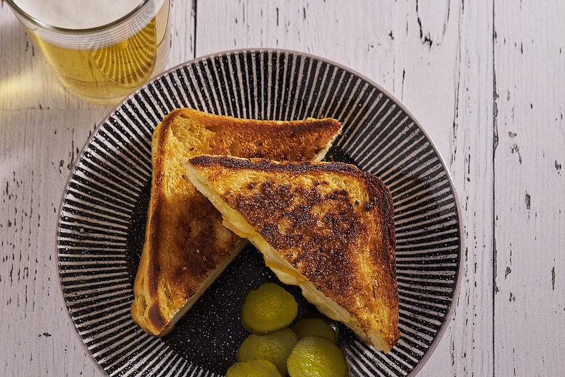

Grilled Cheese Recipe

Learn how to make a simple Grilled Cheese Sandwich.
Ingredients Needed
Cooking Instructions
- Warm up a pan on medium-heat.
- Once pan is heated, add a dollop of margarine.
- As the margarine is melting, add the bread to the pan.
- Toast the slices and add the slice of cheese to one of them.
-
Sprinkle choice of herbs onto the bread and flip the other one on top of
it.
- Serve well and enjoy!